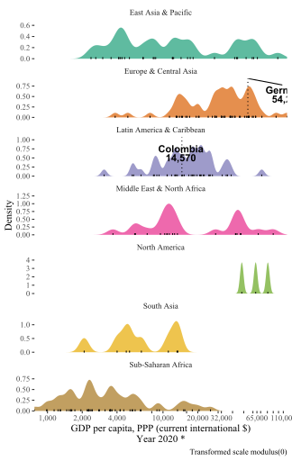

The goal of wdiquickplots is to provide, well, quick plots for World Development Indicators (WDI, “the primary World Bank collection of development indicators, compiled from officially recognized international sources.”). Just jump to the “Get started” page if you want to take a look at all the quick plots examples. To get WDI data, this package is powered by WDI package, developed by Vincent Arel-Bundock.s
You can install it from this Github repo with:
remotes::install_github("edalfon/wdiquickplots")Use case: hey I have to present this study I have been working on in my home country to an audience where I currently live (studying abroad or whatever). Thus, some background data on my home country is in order. A table would certainly do, but it is boring. So let’s put some plots in there.
library(wdiquickplots)
plot_dist_wdi("NY.GDP.PCAP.PP.CD", p = 0)
There you go. That’s the spirit of this package. One line of code and bang!, a relatively decent plot that you can put in your slides to convey a quick message.
Using this package goes as follows:
WDI::WDIsearch for this, but I actually find it a bit more user-friendly to simply go to the indicators page (https://data.worldbank.org/indicator) and get the code from there (it’s in the URL).And that’s it.
You can read other details and description of features in the pkgdown site for this little package (I know, a pkgdown site may be overkill, but anyway). There you can also see examples for all the quick plots in this package, but in general, they quickly show: